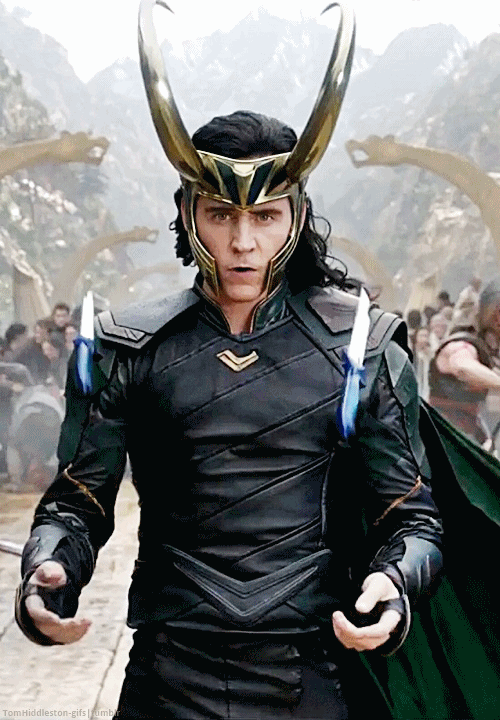

“I am Loki of Asgard, and I am burdened with glorious purpose.”
That one line was enough to send chills down our spines—and New York into chaos.
Loki. The God of Mischief. Prince of Asgard. Adopted son. Outcast. Trickster.
He’s walked through fire, betrayal, redemption, timelines, and TVA offices. But there’s one thing that always seems to follow him like a shadow: The Tesseract.
That mysterious glowing blue cube… object of obsession, war, and wonder.
But here’s the thing: the Tesseract wasn’t just a Marvel MacGuffin or a sci-fi light show. It represented something far deeper—something most people miss, just like I did until now 😂.
It wasn’t just about space. Or time. It was about breaking the limits of what we understand. It was about the fourth dimension.
The Trickster and the Cube
Let’s rewind. In The Avengers (2012), we see Loki land on Earth like a thunderbolt—armed with charm, chaos, and the Tesseract. He doesn’t just want to rule—he wants to bend reality. Slide between realms. Open doors no one else can.
With the Tesseract in hand, he teleports across cities, escapes imprisonment, and whispers across dimensions. To most, it’s a weapon. To Loki? It’s a key.
Because what he’s always wanted isn’t power for power’s sake. It’s freedom. Freedom from being Thor’s shadow. From being Odin’s mistake. From being bound by one timeline, one fate, one reality.
The Tesseract gave him that taste. Because the Tesseract is more than it seems.
Wait—What Even Is a Tesseract?
The word Tesseract isn’t made up by Marvel. It’s a real concept in geometry. It’s a 4-dimensional cube.
Sounds bonkers, right? Let’s walk through it step-by-step.
- 0D: A Point – No length, no width—just a dot.
- 1D: A Line – Stretch that dot in one direction → a line.
- 2D: A Square – Drag the line sideways → now you have length + width.
- 3D: A Cube – Move that square up into space → you get depth.
- 4D: A Tesseract – Move a cube in a completely new direction → the fourth dimension.
We can’t see that direction. We weren’t built to. But math says it’s there. Just like a flat cartoon can’t see “up,” but we can.

Visualizing the Impossible
We cheat by looking at shadows:
- A cube casts a square shadow.
- A tesseract casts a cube-within-a-cube shadow that warps and rotates strangely.
- You’ve probably seen this gifs of a cube folding into itself—that’s a 3D shadow of a 4D shape. That’s the Tesseract.

The tesseract can be unfolded into eight cubes into 3D space, just as the cube can be unfolded into six squares into 2D space.

Real-Life Analogies (So Your Brain Doesn’t Explode)
The Shadow World: Imagine a 2D world on paper. A 3D ball drops through it. The 2D beings see a circle that grows and shrinks—it’s magic to them. To us, it’s just physics.
Now flip it. A 4D object entering our space would look like a cube suddenly appearing, shifting, and vanishing.
Sound familiar?
Storing in the 4th Dimension: Imagine your apartment’s too full. What if you could store your couch in a direction outside the 3 we know? That’s the kind of freedom a tesseract implies.
Reality Like a Flipbook: Our 3D world is one page. Flip the book, and you get a new world each time. The fourth dimension lets you flip pages—jump timelines—just like Loki did.
Physics Agrees
This isn’t just sci-fi:
- Einstein called time the fourth dimension, making spacetime.
- String theory predicts up to 10 or 11 dimensions.
- Math proves the tesseract is real—even if we can’t see it.
Why Loki and the Tesseract Make Sense
Loki doesn’t want to rule Earth. He wants to escape being labeled: “adopted”, “villain”, “failure”. He wants to rewrite himself. Be reborn. Free from fate.
The Tesseract is his way out. His escape hatch from the script.
Final Thought: Mischief, Math, and Meaning
Loki is all of us—bending rules, breaking molds, reaching for something bigger.

The Tesseract is more than a cube. It’s a symbol of possibility. Of transcendence. Of the fourth dimension that lives not just in physics…
…but maybe, also in hope.
If your brain’s spinning like a tesseract-in-a-blender, good. That means you’ve seen a glimpse of something more—just like Loki did.
Ohh!! lastly!! Thanks to Wikipedia for providing such excellent visual animations.